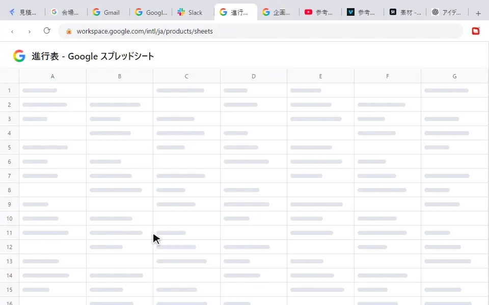

Chrome のサイドバー（正式名は「サイドパネル」）は、右上の︙（その他）のメニューから開き、右上の × で閉じます。左側に出したいときは、︙ → 設定 → デザイン の［サイドパネル］で左右を選びます。幅はパネルの横をドラッグして変えられます。ブックマークや履歴をいつでもすぐ横に出したいなら、そのパネルを「ツールバーに固定」しておくのがいちばん手早い方法です。
💡 サイドバーを、仕事の机に。 タブとブックマーク、メモまでを 1 つのサイドバーで。Alt+T で開き、案件ごとのグループを ▶ でまとめて開けます。アカウント登録なし。 LB TAB Layers を Chrome に無料で追加 →
「Chrome の横にブックマークを出したい」「いつの間にか横にパネルが出て、消し方が分からない」「左側に置きたい」。どれも、Chrome のサイドバー（サイドパネル）の話です。この記事では、Google の公式ヘルプの手順をもとに、サイドバーの基本をまとめます。
Chrome のサイドバー（サイドパネル）とは
見ているページの横に、細長いパネルを開いて使う機能です。Chrome では「サイドパネル」と呼ばれています。ページを開いたまま、横で別のものを見られるのが特長です。
サイドパネルに出せる主なものは、次のとおりです。
- ブックマーク
- リーディング リスト（あとで読むページの一覧）
- 履歴
- Google レンズ
- リーディング モード（ページの本文を読みやすく表示）
- サイドパネルに対応した拡張機能
少しだけ歴史の話：サイドバーを「なくした」のは、Chrome だった
実は、ブラウザの横にパネルを出す仕組みは、昔からありました。Internet Explorer にはお気に入りや履歴を横に出す欄があり、Firefox や Opera も、ブックマークや履歴をサイドバーで開けました。
そこへ 2008 年に登場した Chrome は、タブとアドレスバーだけの、とても簡素な画面でした。Chrome の設計には「Content, not Chrome（主役はページの中身で、ブラウザの枠ではない）」という考え方があり、画面の余白はできるだけページに渡す。サイドバーは、その考え方で外されたものの 1 つと言えます。
それから 15 年ほどたって、Chrome はサイドパネルを取り入れました。2023 年の Chrome 114 からは、拡張機能もサイドパネルを使えるようになっています。ほかのブラウザでも、Microsoft Edge のように横にパネルを持つものが増えています。
サイドバーを手放した Chrome が、もう一度サイドバーを持った。それは、ページを見ながら横に道具を置いておきたいという使い方が、それだけ当たり前になったからだと思います。調べもの、AI とのやりとり、資料とメモ。今のブラウザは、1 枚のページを読むだけの道具ではなくなりました。
サイドバーを表示する（出し方）
右上の ︙（その他） のメニューから、出したいものを選びます。
| 出したいもの | ︙ のメニューから |
|---|---|
| ブックマーク | ［ブックマークとリスト］→［すべてのブックマークを表示］ |
| リーディング リスト | ［ブックマークとリスト］→［リーディング リスト］→［リーディング リストを表示］ |
| 履歴 | ［履歴］→［サイドパネルに履歴を表示］ |
| リーディング モード | ［その他のツール］→［リーディング モード］ |
| Google レンズ | ［Google レンズで検索］ |
ブックマークを横に出す方法は、「Chrome サイドパネルで「すべてのブックマーク」を表示する方法」でくわしく紹介しています。
サイドバーを非表示にする（消し方）
開いているサイドパネルの右上の × を押すと閉じます。
ツールバーに固定したアイコンを消したいときは、そのアイコンを右クリックして［固定を解除］を選びます（固定のしかたは次の段で）。
サイドバーを左側に表示する
サイドパネルは、右側だけでなく左側にも出せます。
- 右上の ︙（その他）→［設定］を開く
- 左のメニューから［デザイン］を選ぶ
- ［サイドパネル］で、パネルを開く側（左か右）を選ぶ
ページの左から読み始める人や、左手前に道具を置きたい人は、左側にすると目の動きが少なくなります。
サイドバーの幅を変える
サイドパネルとページの境目をドラッグすると、幅を広げたり狭めたりできます。ノートパソコンのように画面が狭いときは、少し細めにしておくとページが読みやすくなります。
ブックマークを「常に」すぐ横に出すコツ：ツールバーに固定
毎回 ︙ のメニューをたどるのは手間です。よく使うパネルは、ツールバーに固定しておくと、アイコン 1 回で開けるようになります。固定できるのは、Google レンズ・リーディング リスト・ブックマーク・履歴・リーディング モードです。
- 上の表の手順で、固定したいパネル（たとえばブックマーク）を開く
- メニューのアイコン名の横にある「ツールバーに固定する」を選ぶ
- プロフィールのアイコンの左横に、そのパネルのアイコンが並ぶ
これで、ブックマークをいつでもワンクリックで横に出せます。
Chrome 標準のサイドバーで、できないこと
標準のサイドパネルはシンプルで便利ですが、ブックマーク・リーディング リスト・履歴はそれぞれ別のパネルです。開いているタブの一覧と、保存したブックマークを、同じ場所で並べて扱うことはできません。
サイドパネルの中身をもっと増やしたいときは、サイドパネルに対応した拡張機能を使います。使い道の例は「Chrome サイドパネル活用ガイド」や「Chrome のサイドパネルをメモ帳・チェックリストにする方法」にまとめています。
サイドバーを、仕事の机にする：LB TAB Layers
ここからは、私たちが自分たちの仕事のために作った Chrome 拡張「LB TAB Layers」でのやり方です。
- Alt+T でサイドバーを開く：開いているタブと、保存したブックマークを、1 つのサイドバーに並べて扱えます。
- 案件ごとのグループ：タブを仕事ごとのグループにしまって閉じられます。保存先は Chrome のブックマークなので、閉じても消えません。▶ でまとめて開き、■ でまとめて閉じます。
- ピンバー：毎日開くサイトは、サイドバーのいちばん上に並べておけます。
- ページのメモ：見ているページの横に、メモを残せます。

まとめ
- 出し方：︙（その他）のメニューから、ブックマーク・履歴などを選ぶ
- 消し方：パネルの右上の ×。固定したアイコンは右クリック →［固定を解除］
- 左側に表示：︙ → 設定 → デザイン →［サイドパネル］で左右を選ぶ
- 幅：パネルの横をドラッグ
- 常にすぐ出す：よく使うパネルを「ツールバーに固定」
よくある質問
Q. Chrome のサイドバーはどうやって表示しますか？
右上の︙（その他）のメニューから、出したいものを選びます。ブックマークなら［ブックマークとリスト］→［すべてのブックマークを表示］、履歴なら［履歴］→［サイドパネルに履歴を表示］です。
Q. Chrome のサイドバーを消すには？
開いているサイドパネルの右上の × を押すと閉じます。ツールバーに固定したアイコンは、右クリックして［固定を解除］を選ぶと消えます。
Q. Chrome のサイドバーを左側に表示できますか？
できます。︙（その他）→［設定］→［デザイン］の［サイドパネル］で、パネルを開く側（左か右）を選びます。
Q. ブックマークをいつでもすぐ横に出すには？
ブックマークのサイドパネルを開き、アイコン名の横の「ツールバーに固定する」を選びます。ツールバーのアイコン 1 回で開けるようになります。
▶ 実際の操作を動画で見る
サイドバーで、ブックマークとタブをいっしょに管理する様子です。